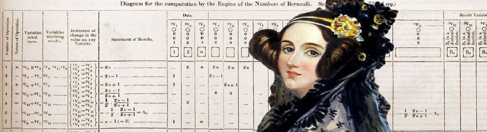

Ada Lovelace me fez escolher ela como mulher inspiradora, porque em tempos difíceis se consolidou como uma matemática e escritora inglesa que ficou reconhecida principalmente por ter escrito o primeiro algoritmo a ser processado por uma máquina, a máquina analítica de Charles Babbage.
Augusta Ada Byron King, aos dezessete anos iniciou habilidades matemáticas e demonstrou interesse nesse campo com incentivo de sua mãe que desde cedo já a estimulava o aprendizado da matemática em sua casa e que mais tarde seria tutorada pelo matemático e lógico Augustus De Morgan.
A primeira programadora de computadores da história nasceu em 10 de dezembro de 1815 em Londres, Inglaterra. Veio falecer em 27 de novembro de 1852 aos 36 anos, vítima de um câncer no útero.
Primeiro programa de computador

Em 1842, Charles Babbage foi convidado a ministrar um seminário na Universidade de Turim sobre sua máquina analítica. Luigi Menabrea, um jovem engenheiro italiano e futuro Primeiro-ministro da Itália, publicou a palestra de Babbage em francês e esta transcrição foi posteriormente publicada na Bibliothèque Universelle de Genève, em 1842.
Babbage pediu a Lovelace para traduzir o artigo de Menabrea para o inglês, adicionando depois a tradução com as anotações que ela mesma havia feito. Lovelace levou grande parte do ano nesta tarefa. Estas notas, que são mais extensas que o artigo de Menabrea, foram então publicados no The Ladies' Diary e no Memorial Científico de Taylor sob as iniciais "AAL".
Em 1953, mais de cem anos depois de sua morte, as notas de Lovelace sobre a máquina analítica de Babbage foram republicadas. A máquina foi reconhecida como um primeiro modelo de computador e as notas de Lovelace como a descrição de um computador e um software.
As notas de Lovelace foram classificadas alfabeticamente de A a G. Na nota G ela descreve o algoritmo para a máquina analítica computar a Sequência de Bernoulli. É considerado o primeiro algoritmo especificamente criado para ser implementado num computador, e Lovelace é recorrentemente citada como a primeira pessoa programadora por esta razão. No entanto, a máquina analítica de Babbage jamais foi construída, tendo apenas a sua precursora a máquina diferencial sido montada em um trabalho que começou em 1984 por Allan G. Bromley professor da Universidade de Sydney junto com Doron Swade (The London Sience Museum), onde esses levaram 18 anos para finaliza-la.
Ada, também conhecida por Condessa de Lovelace, em suas notas, compreendeu a complexidade e beleza da proposta da máquina de Babbage e, talvez devido a sua natureza imaginativa, foi além do que se conhecia no período. Durante a Revolução Industrial, as máquinas, comumente valendo-se da energia a vapor, eram pensadas para realizar tarefas segmentadas e menores a fim de simplificar o processo a ser mecanizado. Algo que diferia da máquina analítica em seu conceito de propósito geral, que tinha a visão de processar músicas, palavras ou imagens por meio de símbolos, e não ficar restrito a números.
A linguagem de programação Ada foi criada em homenagem à Ada Lovelace pelo Departamento de Defesa dos Estados Unidos.